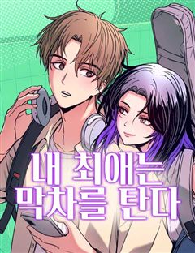

로맨스 설렘·청춘 웹툰 추천 TOP 30
로맨스 작품 중에서 설렘폭발, 청춘로맨스, 청춘, 아이돌 같은 요소가 들어간 작품만 골랐어요. 네이버웹툰·카카오웹툰·레진코믹스에서 조건에 맞는 작품 315개 중 인기 순으로 30개를 골랐어요. 인기 TOP 3: 여신강림, 소녀의 세계, 남편을 내 편으로 만드는 방법
2026-10-07 기준 · 성인 작품 제외
내 취향으로 더 좁혀서 추천받기 →-
1
 네이버웹툰
네이버웹툰여신강림
네웹 대표 글로벌 인기작! 주경, 수호, 서준. 세 청춘의 두근두근 눈호강 로맨스~♡ 메이크업으로 여신이 된 주경이는 꿈과 사랑을 이룰 수 있을까?
로맨스아이돌몰아보기드라마&영화 원작웹툰인플루언서네이버웹툰에서 보기 → -
2
 네이버웹툰
네이버웹툰소녀의 세계
완벽해 보이지만 사실 외로웠던 백조들과 맘씨 착한 오리가 만나 여러 갈등을 함께 겪으며 진짜 친구가 되어가는 소녀들의 찐 우정물
로맨스설렘폭발청춘로맨스청춘공감네이버웹툰에서 보기 → -
3
 카카오웹툰
카카오웹툰남편을 내 편으로 만드는 방법
판타지 소설 속 남편의 손에 죽는 악역 조연, ‘루드베키아’가 되었다. 이 세계의 망할 아버지는 내 정략결혼 상대를 또 물어왔다. 문제는 그 상대가 바로 날 죽이게 될 남편이라는 것! 일단은 살길을 찾아야 한다. 북부 사람들에게 최대한 무해하게 보이면서 원작에서 내가 죽일 남편의 여동…
로맨스설렘폭발눈물샘자극로판빙의카카오웹툰에서 보기 → -
4
 네이버웹툰
네이버웹툰작전명 순정
내 남자친구와 절친의 키스를 목격했다. 그것도 하필이면 재수 없는 같은 반 남자애 '고은혁'과 함께. 안 그래도 혼란스러운데.. 사람마다 평생 받을 사랑의 양이 정해져있다고?? 심지어 내가 받을 수 있는 사랑의 양은 '0'??? 알거지 운명을 바꿔보려는 수애와, 그런 수애에게 말려든…
로맨스청춘로맨스청춘혐관사연남네이버웹툰에서 보기 → -
5
 카카오웹툰
카카오웹툰남편은 됐고, 돈이나 벌렵니다
여친 있는 남자의 아내가 되어 버렸다. 음, 건드리지 말아야겠지? “그럼 넌 바닥에서 자.” “뭐?” 싫은 눈치다. 그래, 바닥은 딱딱하지. 그렇다면 어쩔 수 없다. “손만 잡고 잘게. 누나 믿지?” 그런데 어쩌다 남편과 첫날밤에 침대를 부숴 버린 걸까……. * 황제의 눈밖에 나 유폐…
로맨스설렘폭발로판로맨틱코미디카카오웹툰에서 보기 → -
6
 카카오웹툰
카카오웹툰남주의 입양딸이 되었습니다
"아이를 입양한다” 어느 날 갑자기 떨어진 북부의 주인 보레오티의 폭탄 발언. 그리고 기적처럼 만난 “검은색”을 지닌 아이. 그런데… “근☆육이 제일 좋아~ ☆불끈불끈☆ 모여라~ ٩(๑˃́ꇴ˂̀๑)۶” “이두근 (ง˙∇˙)ว, 삼두근 (ง˙∇˙) ง” “흉근 복근 짜릿해 ദ്ദി ˉ͈…
로맨스설렘폭발로판빙의카카오웹툰에서 보기 → -
7
 카카오웹툰
카카오웹툰내 남자 주인공의 아내가 되었다
남주 여주 커플의 아름다운 사랑으로 저주받은 용과 마물 그리고 최종 보스의 영혼까지 처참하게 박살 내는 소설 <황제와 성녀> "……하하, 차라리 지금 죽으면 좀 편히 갈 수 있으려나." 천재 마법사로 칭송받게 될 찬란한 장래, 그것보다 원하는 건 안락한 노후와 평화로운 미래… 이건만,…
로맨스설렘폭발로판힐링카카오웹툰에서 보기 → -
8
 네이버웹툰
네이버웹툰중간에서 만나
"내가 재밌게 해줄 수 있는데." 서른 살, 노잼 인생을 살고 있는 여름 앞에 어느 날 나타난 미스테리 연하남! 앞뒤 가리지 않고 직진하는 모습이 그저 귀엽다가도, 어딘가 세하고 어딘가 집착적인데? 대체 너 나한테 원하는 게 뭐니?! 두근두근 쌍방사기 로맨스 코미디!
로맨스청춘로맨스리얼로맨스미친작화햇살캐네이버웹툰에서 보기 → -
9
 네이버웹툰
네이버웹툰세기말 풋사과 보습학원
어릴 때 알던 재수없던 놈이 더 재수없는 놈이 되어 돌아왔다! 중3 황미애의 옆 빌라에 어릴 때 잠깐 시골에서 봤던 김철이 이사 와 같은 학교 같은 반이 되고 '철이와 미애'라 놀림 받자 김철은 미애를 불쾌해하며 피한다. 너만 불쾌한 줄 알아? 나쁜 놈! 미애는 속이 상하지만 그럼에도…
로맨스설렘폭발청춘로맨스청춘무심남네이버웹툰에서 보기 → -
10
 카카오웹툰
카카오웹툰여보, 나 파업할게요
2회차 결혼 생활, 돌연 파업 선언?! 결혼 생활 10년 동안 무뚝뚝하고 전쟁밖에 모르던 남편 제스터 옆에서 고생만 하다 불치병으로 죽은 카시아. 하지만 눈을 떠보니 10년 전 결혼 후 첫 날로 돌아와 있었다. 어차피 불치병으로 죽을 몸, 카시아는 이번 생엔 아무것도 안 하고 놀고 먹…
로맨스설렘폭발공감로판로맨틱코미디카카오웹툰에서 보기 → -
11
 카카오웹툰
카카오웹툰돈으로 약혼자를 키웠습니다
넘치는 재력, 빼어난 외모. 일리아 블로든의 인생은 완벽했다. 약혼자의 바람을 목격하기 전까지는. "취향, 취미, 내 모든 걸 바꾸고, 바라는 모든 걸 들어줬는데... 더 이상은 호구처럼 살지 않을 거야. 파혼해 주겠어!" 완벽한 파혼을 위한 새로운 약혼자, 카르한 에반테온. 카르한의…
로맨스설렘폭발사이다로판로맨틱코미디카카오웹툰에서 보기 → -
12
 카카오웹툰
카카오웹툰재워주는 사이
지방에서 올라와 허름하고 낡은 집에서 살던 '태은' 예쁜 집은 애저녁에 포기했다. 조금이라도 아껴보려고 꾸역꾸역 살지만 좋은 집에 살고 싶은 욕망은 나날이 커져만 간다. 좋은 집에 혼자 살지만 연재 스트레스에 키우던 고양이를 떠나보낸 상처로 잠 하나 제대로 못 자는 웹툰 작가 '정문'…
로맨스설렘폭발공감카카오웹툰에서 보기 → -
13
 카카오웹툰
카카오웹툰비에 젖은 흔적들이다
그날 내가 잃어버린 것은 너일까, 나일까. 그리고 내가 다시 찾은 것은 나일까, 너일까. 아니면 우리일까. 14년 전 그날 홀로 남겨진 동경은 갈 길을 잃은 채 그 자리에 멈춰버렸다. 차가운 세상에 대한 믿음도 유대도 기대도 없다. 절망도 없다. 나조차도 없다. 껍데기만 어른이 되어버…
로맨스설렘폭발시대물카카오웹툰에서 보기 → -
14
 네이버웹툰
네이버웹툰마른 가지에 바람처럼
남편을 잃고, 아이를 빼앗기고, 이제 생매장을 눈 앞에 둔 과부 리에타. 그 곳에 ‘미친 폐황자’로 불리는 저주받은 땅, 악시아스 성의 대공. 킬리언이 나타났다. 그녀를 데려가겠다고 말하는 킬리언이 인사를 건넨다. “안녕, 요부”
로맨스설렘폭발서양이능력왕족/귀족네이버웹툰에서 보기 → -
15
 네이버웹툰
네이버웹툰여우놀이
평범하게만 살아온 박온유의 일상에 어느 날 찾아와 둘도 없는 베프가 된 ‘예쁜 애’ 신채리. 두 사람은 서울 최상위 학군의 명문 고등학교 상목고에 진학하게 된 후, 모든 10대들의 워너비 ‘상목고의 여우들’을 만나 아슬아슬한 여우놀이에 휘말리게 되는데…. 욕망을 품은 10대 소녀들의…
로맨스청춘로맨스청춘아이돌현대네이버웹툰에서 보기 → -
16
 네이버웹툰
네이버웹툰내향남녀
MBTI IIIIII!!!!! 극 I 의 내향형 인간들이 만났다! 사이다 없이는 목이 메어 볼 수 없는 쌍방오해 트라우마 극복 연애기 학교에서 존재감 없기로 둘째가라면 서러울 남자유(여, 17세, 친구 0명)에게 학교에서 인기로는 둘째가라면 서러울 여자혁(남, 17세, 친구 N명)이…
로맨스설렘폭발청춘로맨스청춘감성적인네이버웹툰에서 보기 → -
17
 카카오웹툰
카카오웹툰여주인공이 나를 새언니로 점찍었다
빨간망토가 늑대를 잡아먹는 19금 피폐 여공남수 소설에 빙의했다. 문제는 그 늑대가 바로 내 남동생이란 사실! 동생과 깊은 숲속에 숨어 인간계로 도망갈 계획을 세우던 중, 눈밭에 쓰러진 여자아이를 발견했다. 아픈 아이를 지나칠 수 없어 지극정성으로 보살폈건만, 이 아이... 하필이면…
로맨스설렘폭발로판인외존재카카오웹툰에서 보기 → -
18
 네이버웹툰
네이버웹툰다정한 침입자
"우리가 이성으로 보일 확률? 절대 없지." 어린 시절 사고로 가족을 잃고 한치오 가족의 보살핌 속에 자란 정이한. 커갈수록 어색함만 쌓여갔던 옆집 오빠와의 동거가 시작되는데... 꼭꼭 숨겨둔 마음에 자꾸만 침입하는 서로의 관계는 어떻게 변하게 될까.
로맨스청춘로맨스현대능글남소심녀네이버웹툰에서 보기 → -
19
 네이버웹툰
네이버웹툰하렘의 남자들
"내 후궁들부터 들이기로 하였다. 한 다섯 정도." 타리움 제국의 황녀, 라틸. 그녀의 첫사랑 하이신스는 황제가 되기 위해 본국 권력자의 딸과 결혼한다. 충격 받는 라틸. 하지만 그 충격이 가시기도 전에 황태녀가 되고,이복남매의 반란 세력에 맞서 황위를 지켜낸다. 그렇게 여황제가 된…
로맨스설렘폭발순진남자극적인치명적인네이버웹툰에서 보기 → -
20
 네이버웹툰
네이버웹툰같은 학교 친구
항상 바른 자세를 하는 같은 반 친구 겨울이. 요한이는 그런 겨울이가 왠지 신경 쓰인다. 그때 마침 짝이 된 두 사람. 가까워진 자리만큼 마음의 거리가 좁혀져 간다. 두근대는 심장 소리. 피어오르는 얼굴의 이 열기를 뭐라고 부르면 좋은 걸까? 어쩔 줄 모르는 소년소녀의 첫사랑 이야기.
로맨스러블리2020 지상최대공모전하이틴학원로맨스네이버웹툰에서 보기 → -
21
 카카오웹툰
카카오웹툰연습생
굴곡진 인생에 재미를 잃은 소년 우주 앞에 나타난 가수 연습생 평화는 무엇보다도 재밌고 설레고 빛이 나는 존재였다. 그저 평화가 데뷔하는 모습을 옆에서 바라보는 것만으로도 충분하다 생각해온 우주는 어느새 그의 옆에 서고 싶다는 목표를 가지게 된다. 거침없이 다가오는 평화에게 소중한 감…
로맨스설렘폭발BL카카오웹툰에서 보기 → -
22
 네이버웹툰
네이버웹툰해시태그는 첫사랑
사람들의 진심이 ‘해시태그’로 보이게 된 전교 1등 연이솔. 그런데 첫사랑 성신우가 자신에게 ‘#첫사랑이었던_쓰레기’라는 태그를 달았다?! 이유도 모른 채 버림받았던 상처가 되살아나고, 이솔은 신우를 싫어하는 백설과 손잡는다. 복수일까, 미련일까. 이번엔 누가 먼저 상처받을까?
로맨스청춘로맨스첫사랑사연남능력녀네이버웹툰에서 보기 → -
23
 카카오웹툰
카카오웹툰친구끼리 이러는 거 아니야
리시안셔스 공작가의 후계자를 꼬셔 버렸다. 그가 은근슬쩍 내 손을 잡는다. 나는 한숨을 내쉬며 잡힌 손을 비틀어 빼냈다. "친구끼리 이러는 거 아니야." "겨우 손 한번 잡았다고 부끄러워하는 거야, 리엔?" 아무리 생각해도 저 말은 '겨우 손 하나 잡았다'고 얼굴 전체가 벌게진 카르시…
로맨스설렘폭발로판캠퍼스카카오웹툰에서 보기 → -
24
 네이버웹툰
네이버웹툰하는 사이
모두의 태양이자 주목받는 존재인 강시화, 그런 시화와 특별한 소꿉 친구 사이로 주변의 질투를 받던 이은서. 어느 날 홀연히 사라졌던 시화가 몇 년이 흘러 돌아왔다. 자꾸 흔들리는 은서의 마음과 도저히 짐작할 수 없는 시화의 행동. 우리는 특별한 사이잖아? 너도 그렇게 생각하지? 하지만…
로맨스설렘폭발청춘로맨스청춘리얼로맨스네이버웹툰에서 보기 → -
25
 네이버웹툰
네이버웹툰1등급 싸움과외
찐따, 1등급 싸움 과외를 받다! 일진에게 괴롭힘 당하며 우울한 나날을 보내던 고등학생 김재혁. 공부는 잘하지만, 차라리 싸움을 더 잘하고 싶다. 그러던 그에게 운명적으로 '싸움 과외 선생님'이 생기게 되는데!
로맨스청춘로맨스러브코미디학원액션성장물네이버웹툰에서 보기 → -
26
 카카오웹툰
카카오웹툰귀짤 로맨스
사진작가로 활동하고 있는 사진학과 4학년 '유선우'는 어느 날 해외 유명 매거진으로부터 협업 제안을 받는다. 그렇게 설레는 마음도 잠시, 최근 사진을 찍는 족족 귀신이 같이 찍히는 심령 현상에 처했던 '선우'는 이를 해결하기 위해 여러모로 애를 써보지만 쉽지 않다. 그러던 중 심령사진…
로맨스설렘폭발서스펜스캠퍼스카카오웹툰에서 보기 → -
27
 네이버웹툰
네이버웹툰양아치의 첫사랑
‘그 시절, 내가 좋아한 양아치 남자애도 날 좋아했었다.’ 도래는 대학에서 5년 만에 첫사랑 해원을 마주친다. 그리고 뒤늦은 고백을 받는데.. 기쁜 마음보다는 당황스럽기만 하다. 그에게는 여자친구가 있었기에! 제정신 아닌 그의 5년 만의 고백. 과연 이 감정은 여전히 유효한 것일까?
로맨스설렘폭발청춘로맨스인소감성순애남네이버웹툰에서 보기 → -
28

네이버웹툰내 최애는 막차를 탄다
“오늘도 막차에서 만난 그녀, 그녀와 말할 수 있다면!” 대학생 이여운은 늦게까지 일하고 매일 막차를 탄다. 그때마다 마주치는 기타를 멘 여자 신해인. 우연인 듯 인연인 듯 만나는 두 사람은 서로의 최애가 인디 뮤지션 “긴 오후”라는 걸 알게 되고 점점 가까워지게 된다.
로맨스설렘폭발청춘로맨스2024 연재직행열차러브코미디네이버웹툰에서 보기 → -
29
 카카오웹툰
카카오웹툰타람 타람 타람
나긋나긋한 움직임으로 들어온 다온이 연회장 중앙에서 멈춰 섰다. 인형만큼이나 무미하고 감정 없는 얼굴이었다. 그럼에도 도도하고 우아해서 얼음 여왕처럼 강렬한 인상을 주었다. 엑서는 다리를 꼬며 낮게 웃었다. “지배자로서, 오늘 밤 널 안겠다.” 운명적인 첫 만남. 한눈에 반해버린 여자…
로맨스설렘폭발눈물샘자극로판시대물카카오웹툰에서 보기 → -
30
 카카오웹툰
카카오웹툰후궁계약
사신이란 별명으로 불리는 자객 예서는 어느 날 수상한 남자에게 거액의 비밀 의뢰를 받는다. "성국 황제의 후궁으로 입궁해 다오. 그게 내 의뢰이다." 뭐야 이거? 자객을 후궁으로 고용해서 뭘 하려고? "왜. 존귀하신 황제께서 미녀 자객한테 한번 먹혀보고 싶대?" "뭐 그쪽도 전혀 흥미…
로맨스설렘폭발개그로판로맨틱코미디카카오웹툰에서 보기 →